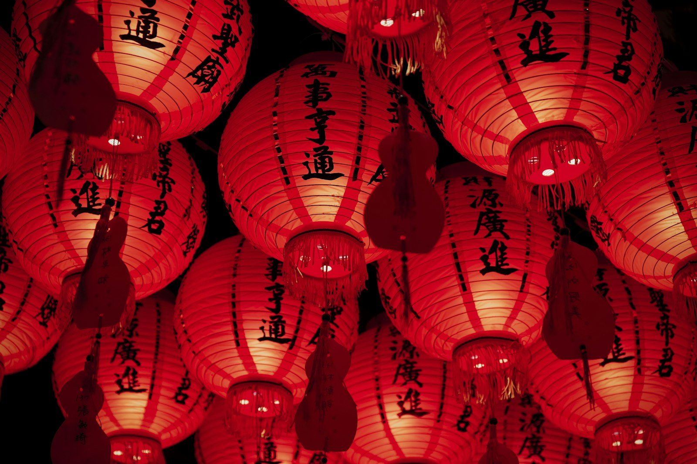

Annual Pageant

Kandy Esala Perahera
One of Asia's oldest and most magnificent cultural processions. Held annually in July/August, featuring hundreds of ceremonial drummers, whip crackers, fire dancers, and richly caparisoned tuskers carrying the sacred relic casket.